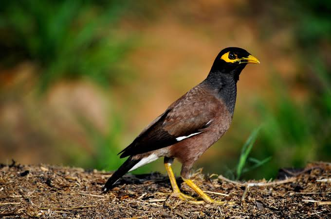

Common maya
Birds
The common myna or Indian myna, sometimes spelled mynah, is a member of the family Sturnidae native to Asia. An omnivorous open woodland bird with a strong territorial instinct, the myna has adapted extremely well to urban environments.
Scientific name: Acridotheres tristis
Length: 23 cm (Adult)
Class: Aves
Order: Passeriformes
Conservation status: Least Concern (Population increasing) Encyclopedia of Life
Mass: Female: 120 – 140 g (Adult), Male: 110 g (Adult)
The common myna or Indian myna (Acridotheres tristis), sometimes spelled mynah, is a member of the family Sturnidae (starlings and mynas) native to Asia. An omnivorous open woodland bird with a strong territorial instinct, the myna has adapted extremely well to urban environments.
The range of the common myna is increasing at such a rapid rate that in 2000 the IUCN Species Survival Commission declared it one of the world's most invasive species and one of only three birds in the top 100 species that pose an impact to biodiversity, agriculture and human interests.
In particular, the species poses a serious threat to the ecosystems of Australia where it was named "The Most Important Pest/Problem".
Biology of Common maya
Taxonomy
In 1760 the French zoologist Mathurin Jacques Brisson included a description of the common myna in his Ornithologie based on a specimen that he mistakenly believed had been collected in the Philippines. He used the French name Le merle des Philippines and the Latin Merula Philippensis.
Although Brisson coined Latin names, these do not conform to the binomial system and are not recognised by the International Commission on Zoological Nomenclature.
When in 1766 the Swedish naturalist Carl Linnaeus updated his Systema Naturae for the twelfth edition, he added 240 species that had been previously described by Brisson.
One of these was the common myna. Linnaeus included a brief description, coined the binomial name Paradisea tristis and cited Brisson's work.
The type location was subsequently corrected to Pondicherry in southern India. The specific name tristis is Latin for "sad" or "gloomy".
This species is now placed in the genus Acridotheres that was introduced by the French ornithologist Louis Jean Pierre Vieillot in 1816.
Distribution and habitat
It is a species of bird native to Asia with its initial home range spanning from Iran, Pakistan, India, Nepal, Bhutan, Bangladesh and Sri Lanka; as well as Afghanistan, Uzbekistan, Tajikistan, Turkmenistan, Myanmar, to Malaysia, Singapore, peninsular Thailand, Indo-China, Japan (both mainland Japan and Ryukyu Islands) and China.
The myna has been introduced in many other parts of the world such as Canada, Australia, Israel, New Zealand, New Caledonia, United States, South Africa, Kazakhstan, Kyrgyzstan Uzbekistan and Cayman Islands islands in the Indian Ocean (Seychelles,
Mauritius, Réunion, Madagascar, Maldives, Andaman and Nicobar Islands and Lakshadweep archipelago) and also in islands of the Atlantic, such as Ascension and St Helena, and Pacific Oceans.
The range of the common myna is increasing to the extent that in 2000 the IUCN Species Survival Commission declared it among the World's 100 worst invasive species.
This abundant passerine is typically found in open woodland, cultivation and around habitation. Although this is an adaptable species, its population is abnormal and very much considered a pest in Singapore (where it is locally called as gembala kerbau, literally 'buffalo shepherd') due to competition with its cousin, the introduced Javan myna.
Breeding
Common mynas are believed to pair for life. They breed through much of the year depending on the location, building their nest in a hole in a tree or wall. They breed from sea-level to 3000 m in the Himalayas.
The normal clutch size is 4–6 eggs. The average size of the egg is 30.8 x 21.99 mm. The incubation period is 17 to 18 days and fledging period is 22 to 24 days. The Asian koel is sometimes brood parasitic on this species.
Nesting material used by mynas include twigs, roots, tow and rubbish. Mynas have been known to use tissue paper, tin foil and sloughed off snake-skin.
During the breeding season, the daytime activity-time budget of common myna in Pune in April to June 1978 has been recorded to comprise the following: nesting activity (42%), scanning the environment (28%), locomotion (12%), feeding (4%), vocalisation (7%) and preening-related activities, interactions and other activities (7%).
Food and feeding
Like most starlings, the common myna is omnivorous. It feeds on insects, arachnids, crustaceans, reptiles, small mammals, seeds, grain and fruits and discarded waste from human habitation.
It forages on the ground among grass for insects, and especially for grasshoppers, from which it gets the generic name Acridotheres, "grasshopper hunter". It however feeds on a wide range of insects, mostly picked from the ground.
It is a cross-pollinator of flowers such as Salmalia and Erythrina. It walks on the ground with occasional hops and is an opportunistic feeder on the insects disturbed by grazing cattle as well as fired grass fields.[]
Roosting behaviour
Common mynas roost communally throughout the year, either in pure or mixed flocks with jungle mynas, rosy starlings, house crows, jungle crows, cattle egrets and rose-ringed parakeets and other birds. The roost population can range from less than one hundred to thousands.
The time of arrival of mynas at the roost starts before and ends just after sunset. The mynas depart before sunrise. The time and timespan of arrival and departure, time taken for final settlement at the roost, duration of communal sleep, flock size and population vary seasonally.
The function of communal roosting is to synchronise various social activities, avoid predators, exchange information about food sources.
Communal displays (pre-roosting and post-roosting) consist of aerial maneuvers which are exhibited in the pre-breeding season (November to March). It is assumed that this behaviour is related to pair formation.